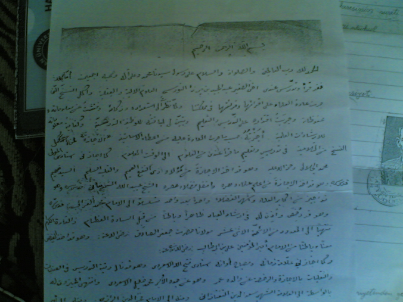

|
Molla Abdülmecid Efendi’ye verdiði icazetname |
  
|
|
Molla Abdülmecid Efendi’ye verdiði icazetname |
|
Bediüzzaman Hazretlerinin verdiði bir icazetname
Bediüzzaman’ýn, küçük kardeþi Molla Abdülmecid Efendi’ye verdiði icazetname Diyanet Ýþleri Baþkanlýðýnýn arþivinden, deðerli araþtýrmacý yazar Abdülkadir Badýllý tarafýndan çýkartýlmýþtýr.

Arapça olan Ýcazetname'nin Abdülkadir Badýllý tarafýndan yapýlan tercümesi;
Elhamdülillahi Rabbi’l âlemin. Vesselatu vesselamu ala Resulihi Seyyidina Muhammedin ve ala alihi ve sahbihi ecmain.
Emma ba’d.. Küçük kardeþim, "Mirza oðlu Abdülmecid", benim yanýmda âlet ilimleri ve akli ilimleri okuyup ders aldý. Ve memleketimizde ulemanýn âdeti vechiyle okunan ve okutulan bütün kitap ve nüshalarý bitirdi.
Vakta ki ben onun istidad ve zekâsýna baktým ve onun malumat ve mahfuzatýný teftiþ ettim. Ve onun tedris ve talimde iktidarýný tecrübe eyledim. Onun tedris vazifesindeki liyakati bana tebeyyün eyledi. Ve ilmi irþaddaki malumatýnýn kifayeti bana göründü. Ben de Üstazlarýn talebelerine verdiði tarzda ona icazet verdim.
Medresede okunan ders ve ilimleri belli bir zamanda bitirerek ders vermeye liyakat kazandý. Ondan dolayý ona icaze verdim. Nasýl ki ayný tarzda üstadým ve efendim Muhammed Celali (rahmetullahi aleyh) bana icazet vermiþtir.(1)
O da kendi üstadý ve efendisi ilim ve irþadýnýn faydasý umumi olan ve kalbi selim sahibi Þeyh Seyyid Fehim(Arvasi) kuddise sirruh’tan icaze almýþtýr.(2)
O da kendi üstadý olan, devrinin âlimlerinin üstünü ve asrýnýn fuzalasýndan olan Þeyh Ubeydullah Þemdinani’den ders almýþtýr.
Þeyh Ubeydullah Þemdinani ise, Mevlana Halid-i Baðdadi’nin halifesi Þeyh Taha-yý Nehri’den icazet almýþtýr.
Onun ilim silsilesi ise, büyük âlimler ve faziletli kimseler þeklinde ta Ýmam Gazali’ye kadar devam eder.
Ýmam Gazali’ye ise hem zahir hem batýn irþadlarda büyük ulema ve sadat-ý kiram tarafýndan icaze verilmiþ.
Bu silsile devam ede ede, ta on iki imamdan biri olan Ýmam Cafer-i Sadýk’a kadar gidiyor.(Radiyallahu anhüm)
O (Ýmam Cafer Sadýk) ise, manen ve batýnen Emirel Müminin Ýmam Ali bin Ebi Talib(R.A)’den icazet almýþtýr.
(Bediüzzaman hazretleri bundan sonra icazetinin ikinci kanalýný þöyle belirtiyor)
Ve yine zamanýn âlimi ve asrýnýn kandili olan Þeyh Fethullah Es’ardi(Siirdi) (3) bana icaze vermiþtir. O ise, kendi babasý Ömer Siirdi’den icaze almýþtýr.
O ise, büyük dedesi Molla Halil Siirdi’den okumuþtur. Molla Halil’in icazet silsilesi ise gide gide ta meþhur âllame Sadeddin-i Taftezani’ye ulaþýyor. Sadeddin-i Taftezani’nin icazeti Fahreddin-i Razi’ye ulaþýyor. Bu silsile ise oradan Emirel müminin Ýmam Ali bin Ebu Talib’e kadar gidiyor.
Üstadlarýmýn bana icazet vermeleri gibi ben de kardeþime icazet verdim. Tedris vazifesinde ondan razý oldum, üstadlarýmýn benden razý olmalarý gibi.
Ya Rabbi! Onu muvaffak et ve dinde fakih kýl. Onun ilminin menfaatini umumi yap. Dini ve dünyevi afetlerden onu selamette kýl. Onu ve bizi sýrat-ý müstakime hidayet eyle.
(Not: Ýcazenin altýnda Üstad Bediüzzaman’ýn o zaman kullandýðý mührü bulunmaktadýr.)
---------------------------------
Haþiyeler:
1: Üstad “Muhammed Celali Efendi’den aldýðým icazetnameyi, Ruslara esir olduðum zaman zayi ettim” demektedir. Þeyh Muhammed Celali Hazretleri o bölgede yaþayan “Celalî” aþiretlerinden olup, Birinci Cihan Harbinde muhaceretle Diyarbakýr’ýn Silvan ilçesinin bir köyüne gelmiþ, yerleþmiþ ve orada Hakkýn rahmetine kavuþmuþtur. Ancak vefat senesi hakkýnda bir bilgimiz yoktur.
2: Þeyh Fehim hazretleri hakkýnda Bediüzzaman þöyle demektedir; “benim silsile-i ilimde en mühim üstadým olan Þeyh Fehim kuddise sirrûhü” (Kastamonu Osmanlýca 301)
3: Bediüzzaman hazretleri bir soru münasebetiyle Þeyh Fethullah Efendi’den þöyle bahsetmektedir; “Meraklý kardeþimiz Re'fet Bey, Bediüzzaman-i Hemedânînin üçüncü asýrda, vazife ve te'lifatý hakkýnda malûmat istiyor. Ben o zat hakkýnda yalnýz harika bir zekâveti ve kuvve-i hafýzasý bulunduðunu biliyorum. Elli beþ sene evvel, üstadlarýmdan Siirt'li merhum Molla Fethullah eski Said'i ona benzeterek, onun o ismini ona vermiþtir...(Osmanlýca Emirdað Lahikasý-s: 383)
Kaynak: Cevaplar.org